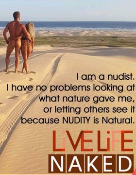

.png)
Naturism is a lifestyle of practicing non-sexual social nudity in private and in public; the word also refers to the cultural movement which advocates and defends that lifestyle. Both may alternatively be called nudism. Though the two terms are broadly interchangeable, nudism emphasizes the practice of nudity, whilst naturism highlights an attitude favoring harmony with nature and respect for the environment, into which that practice is integrated. That said, naturists come from a range of philosophical and cultural backgrounds; there is no single naturist ideology.
Ethical or philosophical nudism has a long history, with many advocates of the benefits of enjoying nature without clothing. At the turn of the 20th century, organizations emerged to promote social nudity and to establish private campgrounds and resorts for that purpose. Since the 1960s, with the acceptance of public places for clothing-optional recreation, individuals who do not identify themselves as naturists or nudists have been able to casually participate in nude activities. Nude recreation opportunities vary widely around the world, from isolated places known mainly to locals through officially designated nude beaches and parks, and on to public spaces and buildings in some jurisdictions.
Nudity in India
Nudity in India has a multifaceted history, deeply rooted in the nation's religious, cultural, and social practices. While public nudity is generally frowned upon in modern urban areas, specific religious and traditional contexts have embraced forms of nudity as symbols of purity, renunciation, or spirituality. It is worth noting that the depiction of nudity in Indian art doesn't support the claim that public nudity was acceptable/normal across all castes and regions in India. By contemporary standards, the unclothed female upper body is considered semi-nude or a sign of obscene nudity, however, historically some regions and classes/castes of modern-day India, have traditionally had this kind of public nudity/semi-nudity as the norm
History
The history of nudity in India is a tapestry of evolving cultural, religious, and social norms. Spanning over millennia, the perception and representation of nudity have undergone significant transformations, reflecting the broader shifts in Indian society.
Ancient Period:
Indus Valley Civilization (3300–1300 BCE):
The artifacts from this period, particularly the terracotta figurines, display both male and female forms, sometimes in semi-nude states. These depictions highlight the civilization's possible comfort with the human form and its aesthetic appreciation. The Dancing Girl is a notable bronze statue from Mohenjo-Daro, one of the major sites of the Indus Valley Civilization. This figurine depicts a young woman in a semi-nude state and is currently housed at the National Museum in New Delhi.
Vedic Period (1500–500 BCE):
The Rigveda, one of the oldest Indian scriptures, makes occasional references to nudity, especially in the context of ascetic practices. Nudity was seen as a form of renunciation from worldly attachments.
Classical Period
Buddhism and Jainism (6th Century BCE onwards):
Ascetic practices in both religions sometimes involved renouncing clothing. Particularly in Jainism, the Digambara sect (meaning "sky-clad") had monks who embraced nudity as a symbol of complete detachment.
Temple Art and Sculpture: The temples from the Gupta and post-Gupta periods, like Khajuraho, display intricate carvings of both divine and human figures in the erotic or non-erotic nude poses. These weren't viewed as profane but rather as symbolic representations of divine beauty, the cycle of life, and the interplay of the cosmic principles. Similar works have been found with reference to the Chola empire.
Medieval Period
Yogi practices:
Yogis have historically worn minimal clothing, and many were nude. This practice aligns with their belief in the importance of asceticism, the distancing from the material desires and attachments. In the biography of Saint Gorakhnath for example, we have references to nude male and female yogis who had visited the famous Amarnath Temple during medieval period of India.
Islamic Invasion (12th Century onwards):
With the advent of Islamic rulers, there was a cultural shift. The new rulers brought with them more conservative views on nudity and representation of the human form, leading to a decline in the artistic representation of nudity in public spaces, as well as a decline in public nudity in general.
Bhakti and Sufi Movements:
While the larger society became more conservative, the Bhakti and Sufi poets often used the metaphor of nakedness to symbolize purity, innocence, and a soul stripped of worldly desires. In Odisha, the Konark Sun Temple has nude artworks from the 13th century CE. The Kashmiri saint Lalleswari is said to have discarded her clothes and danced naked
Modern/Colonial Era
British Colonial Rule (19th and 20th Centuries):
Victorian morals and the British legal system further entrenched conservative views on nudity. The Indian Penal Code, introduced in 1860, criminalized public nudity. There was also a noticeable shift in the Indian art scene, with fewer depictions of the nude form as artists catered to the tastes of their colonial patrons.
In 19th century Travancore, baring of one's chest to higher status people was considered a sign of respect by both males and females. Thus, those of the lower status castes, such as the Nadar climbers, Even women of other dominant castes like the Nairs had to keep their breasts bare in the presence of Brahmin men. Nair women had no right to hide their breasts in front of them. The Channar revolt was the Nadar climber women's fight for more than four decades, for the right to wear upper-body garments.